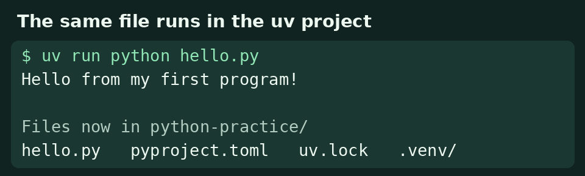
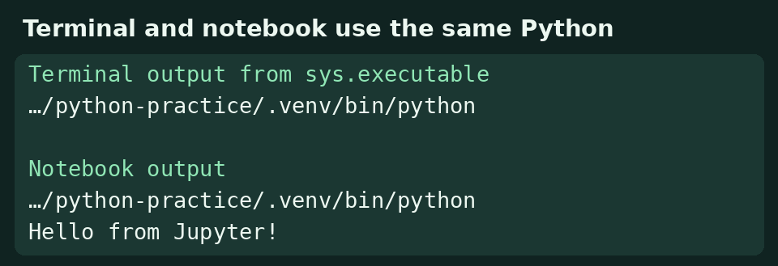

Python setup & first program
Start with one line of Python. Once it runs, you’ll use uv to set up a project and run a small Jupyter notebook with that project’s Python.
Install and check Python
Python runs your code. VS Code is the editor where you write it. A terminal is where you type commands to start Python.
- On Windows or macOS, choose your operating system at Python downloads and install Python 3. On Linux, check for Python first. If the command below fails, install
python3using your distribution’s package manager. - Install and open VS Code. From the top menu, choose Terminal → New Terminal. The terminal opens below the editor.
- In the terminal, type the command for your system and press Enter.
py -3 --versionpython3 --versionCheckpoint. The output begins with Python 3. If the command is missing after installation, close and reopen VS Code. On Windows, if python --version is the command that prints Python 3, use python in place of py -3 for the plain Python steps.
Create your first file
- In your file manager, create a folder named
python-practice. In VS Code, choose File → Open Folder and open that folder. - In the Explorer panel on the left, select New File. Type
hello.pyand press Enter. The.pyending marks it as a Python file. - Click inside the editor and type the code below. Save with Ctrl+S on Windows or Linux or Cmd+S on macOS.
print("Hello, world!")print() displays the text inside the quotes. This line belongs in hello.py.

hello. Yours should say python-practice. Screenshot from the VS Code Python tutorialCheckpoint. You can see hello.py in Explorer and the print() line in the editor.
Run your program
With python-practice open, choose Terminal → New Terminal. Type your system’s command there and press Enter. Python reads the saved file and prints the message on the next line.
py -3 hello.pypython3 hello.py
Hello, world! is the result you look for.Checkpoint. You see Hello, world! below the command.
Change the message
In the editor, change the text inside the quotes to Hello from my first program!. Save and run the same terminal command again.
Checkpoint. You see the new message. You’ve finished your first script. The next steps prepare the folder for projects with dependencies and notebooks.
Set up the project with uv
As projects grow, they need extra Python libraries. A customer integration might need a library to call an API, while another project needs a different version. uv is a command-line tool that can manage Python versions, install libraries and keep each project’s libraries in its own virtual environment.
- Find your operating system in the official uv installation guide. Install it once, then open a new VS Code terminal. Run
uv --version. Seeing a version means the terminal can find it. - In the same
python-practicefolder, run the commands below one at a time. If there is already apyproject.tomlin that folder, skipuv init --bare.
uv init --bare
uv run python hello.pyuv init --bare creates the project settings without adding another example file. uv run prepares the environment and runs your existing script with the project’s Python. Your last edited message should appear again.

uv. Your greeting should match what you saved in hello.py.pyproject.tomldescribes the project and which libraries it asks for.uv.lockrecords the resolved library versions so another machine can reproduce the setup..venvis the local environment that actually contains the project’s Python and installed libraries.
Checkpoint. Your script runs through uv. You’ll use uv add httpx when you add an API dependency to a project. For the next step, you’ll add a library specifically for working on the notebook.
When would I use uv pip install?
uv add records a dependency for this project. uv pip install installs into an environment without recording it in the project files. Use uv add for this managed project.
Use the same Python in Jupyter
A notebook is an .ipynb file with cells you can run one at a time. Use it to try a data transformation, inspect API results or leave notes beside your experiment. A kernel is the running Python process that executes the cells and remembers values between runs.
- Open Extensions in VS Code and install the Python and Jupyter extensions published by Microsoft.
- In the project terminal, run the two commands below. The first adds the notebook kernel as a development dependency. The second prints the Python executable path that you’ll compare with the notebook.
uv add --dev ipykernel
uv run python -c "import sys; print(sys.executable)"- Open the Command Palette with Ctrl+Shift+P or Cmd+Shift+P. Choose Create: New Jupyter Notebook and save the notebook as
check_python.ipynbinpython-practice. - At the top right of the notebook, choose Select Kernel. If needed, choose Select Another Kernel, then Python Environments and the project’s
.venv. See the kernel picker in the VS Code guide. - Put the code below in the first cell. Click its Run button or press Shift+Enter.
import sys
print(sys.executable)
print("Hello from Jupyter!")
.venv\Scripts\python.exe. On macOS or Linux, expect .venv/bin/python. The path should match the one from your terminal on the same machine.Checkpoint. The paths match and you see Hello from Jupyter!. Try changing the message in the cell and running it again. If you’re unsure whether earlier cells affected the result, restart the kernel and run the cells from the top.
What if the notebook uses a different Python?
Check that the folder containing .venv is open. Rerun uv add --dev ipykernel in that folder, then reopen the kernel picker and select the project environment. Run the cell again and compare the full paths.
What if the lecture uses Google Colab?
Paste the same Python cell into a Colab notebook and run it. Colab runs Python on a hosted machine, so its path will differ from your local .venv. Use the matching-path check when you work locally in VS Code.
Fix a missing file or stale output
Python can’t find hello.py
In VS Code, reopen python-practice with File → Open Folder. Open a new terminal and list the files.
Get-Location
Get-ChildItempwd
lsThe first command shows your current folder and the second lists its files. Confirm that the name is exactly hello.py and run the script again.
The terminal still prints the old message
Save hello.py in the editor, then rerun the command. Check Explorer if you have more than one copy of the file.